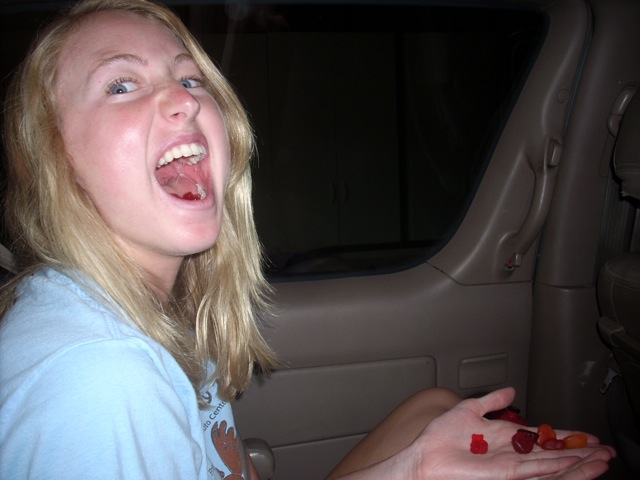
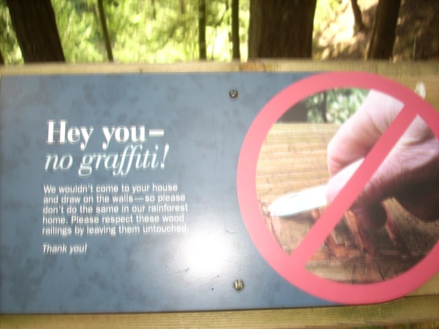
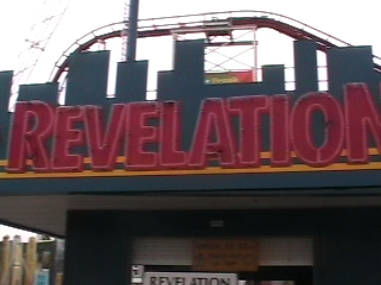
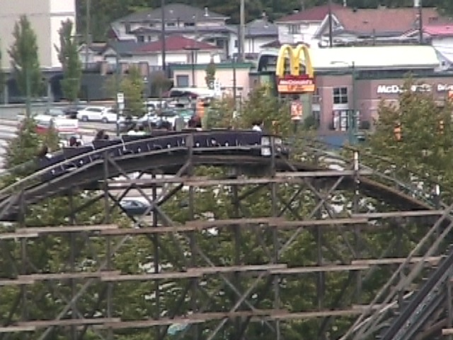

Vancouver/PNE Playland 2009
Ok, so I was out in Vancouver for week. Though I was in film school for most of that week, I still got to do a couple of touristy stuff, but most of all, I got to go to PNE Playland!!! To show how Canadian we are, we ended up flying Air Canada.

I'm not that exited about going to Canada. I'm just super happy I got a gummy bear in a pack of fruit snacks!!!!
INCREDIBLECOASTERS IS BACK IN CANADA!!!!!!!
We made it all the way to Canada, only to be locked out of our room.
STOKE!!! STROKE!!! STROKE!!!!
As you can see in this picture, most of the buildings in Vancouver look the same.
 This is the Vancouver Steam Clock. Steam comes out of it. Fascinating. Huh. =)
This is the Vancouver Steam Clock. Steam comes out of it. Fascinating. Huh. =)
Hello Rosie. Do you enjoy us eating at your resteraunt?
While this suspension bridge had a cool view, it wasn't all that great as it didn't really sway that much and was all jammed up with tourists taking their picture on the bridge.

This is the sign when I first saw it.
And this is what it looked like when I came back 15 minutes later. What!!? NO!!! HOW DARE YOU ACCUSE ME OF CAUSING THE GRAFFITI!!!
Doing the ziplines at Gorse Mtn was pretty fun.
WEE!!!!!!!
Vancouver from Gourse Mountain.
And now for the theme park portion of this update, here we are at PNE Playland.
Unfortunetly, this is the last picture in the update taken with my still camera. From this point on, all the pictures in this update came from my footage. (Damn my still camera battery.)
Anyways, here we are at PNE Playland. My 3rd Park in Canada.
Ahh Damn It! I was hoping to ride the Enterprise. Oh well. I didn't come here to ride the Enterprise.
 This is the real reason I came to PNE Playland.
This is the real reason I came to PNE Playland.
All Right. Credit #162. Looks like a fun wooden coaster. Let's see how it is. (Oh, Those trains are AWSOME!!!)
 While going up the lifthill, it seems like a pretty normal wooden coaster.
While going up the lifthill, it seems like a pretty normal wooden coaster.
All I have to say about this ride is "OH MY FU*KING GOD!!!!!!!!!!!"
 First off, it has these really awsome turns. They arn't quite as good as Mavericks, but they're still strong enough to make my video camera glitch!
First off, it has these really awsome turns. They arn't quite as good as Mavericks, but they're still strong enough to make my video camera glitch!
 And the airtime. It is SO STRONG!!!!! Every hill felt like Jackrabbit's Double Down!!! It was that fu*king insane!!!!
And the airtime. It is SO STRONG!!!!! Every hill felt like Jackrabbit's Double Down!!! It was that fu*king insane!!!!
 The airtime was such a huge shock for Allie!! (Before this, the strongest airtime she's dealt with were the bunny hops on CA Screamin without the trims.) So from this point on out, all the captions are going to be quotes from Allie as she experiences TRUE EJECTOR AIR for the first time ever.
The airtime was such a huge shock for Allie!! (Before this, the strongest airtime she's dealt with were the bunny hops on CA Screamin without the trims.) So from this point on out, all the captions are going to be quotes from Allie as she experiences TRUE EJECTOR AIR for the first time ever.
 "OH MY GOD!!!!! DID YOU SEE THAT!!!!!!?"
"OH MY GOD!!!!! DID YOU SEE THAT!!!!!!?"
 "I THINK I BROKE MY ARM!!!!! I HIT IT REALLY HARD ON THE SEAT ON THAT LAST BUNNY HOP!!!!!!"
"I THINK I BROKE MY ARM!!!!! I HIT IT REALLY HARD ON THE SEAT ON THAT LAST BUNNY HOP!!!!!!"
"CELESTE IS GOING TO FLY OUT OF HERE!!!!!!!!!!!!"
Screw that!!! It's all about Coaster here!!!!!
Read the caption above.
Ok Celeste. We'll go on the chairswings for you.
Hmm. I feel like I've seen this coaster before.
Oh now I know where I've seen this before. This is the coaster from Final Destination 3!!!! So you're the coaster that gave the whole world POVaphobia.
It's Bullsh*t the Ride!!!!!
 Uh oh. I'm having fun on this ride. Fun is related to danger. Which means we must be in danger here!!!
Uh oh. I'm having fun on this ride. Fun is related to danger. Which means we must be in danger here!!!
 Our death clocks are all ticking. Why? Because Final Destination 3 says so!!!!
Our death clocks are all ticking. Why? Because Final Destination 3 says so!!!!
Uh oh. This rollercoaster goes upsidedown. Everyone knows that going upsidedown is dangerous. We must be dying here.
 "OH SH*T!!!!! THERE'S A VIDEO CAMERA ON THIS ROLLERCOASTER!!!! EVERYBODY GET AWAY FROM THE RIDE!!! IT'S GOING TO CRASH!!!! WE'RE ALL GOING TO DIE!!!!!"
"OH SH*T!!!!! THERE'S A VIDEO CAMERA ON THIS ROLLERCOASTER!!!! EVERYBODY GET AWAY FROM THE RIDE!!! IT'S GOING TO CRASH!!!! WE'RE ALL GOING TO DIE!!!!!"
 But wait, we're all fine. You know why? Because we all live by the laws of physics and not the watery bullsh*t known as Final Destination 3.
But wait, we're all fine. You know why? Because we all live by the laws of physics and not the watery bullsh*t known as Final Destination 3.
Laws of Physics 1. Final Destination 3 Believing Retards 0.
Why does this Log Flume feel like it came straight out of RCT1?
Oh yeah. They also have a Space Shot here.
Hey California Adventure! IOA got Dr Doom right and PNE Playland got Hellevator right! Why can't that big makeover of yours include removing the screamshields from Maliboomer?
 No, I'm not a Ferris Wheel Enthusiast. I just rode this to get some shots of PNE Playland.
No, I'm not a Ferris Wheel Enthusiast. I just rode this to get some shots of PNE Playland.
Hey Andrew. Does this please you?
Heres another cool flat ride I saw from the Ferris Wheel.
 Bullsh*t the Ride from the Ferris Wheel.
Bullsh*t the Ride from the Ferris Wheel.

All right! My first Skyscraper!
 I'd probably be dead if I didn't.
I'd probably be dead if I didn't.
Here you can see Revelation from the ferris wheel.
 To my dissapointment, it wasn't all that intense.
To my dissapointment, it wasn't all that intense.
The good news is that it was fast. REALLY FAST!!
"FLIP DAMMIT!!! FLIP!!!!!"
 Ok, that's enough of the rest of PNE Playland. Let's get back to Coaster and its awsomeness.
Ok, that's enough of the rest of PNE Playland. Let's get back to Coaster and its awsomeness.
Words can not describe how much I love this coaster.
While the first drop is fun and all...
 It's the ejector air that makes the ride so great.
It's the ejector air that makes the ride so great.
 Sorry Phoinex. I know you're a kickass woodie and all and I love you alot. And I mean ALOT!!! But you're just not my #1 Wooden Coaster anymore. That just has to go to Coaster.
Sorry Phoinex. I know you're a kickass woodie and all and I love you alot. And I mean ALOT!!! But you're just not my #1 Wooden Coaster anymore. That just has to go to Coaster.

"I'd like a Big Mac Combo please and for dessert, an extra large helping of EJECTOR AIR please!!!!!!!!!!"
 To end this update, we'll show Coaster and it's badass ejector air!!! Now go to Vancouver and ride this Awesome Awesome Coaster!!!
To end this update, we'll show Coaster and it's badass ejector air!!! Now go to Vancouver and ride this Awesome Awesome Coaster!!!
Home